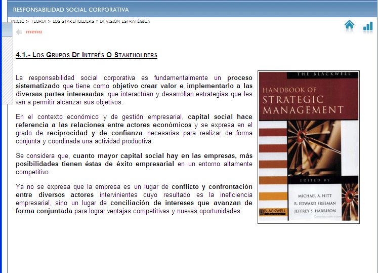
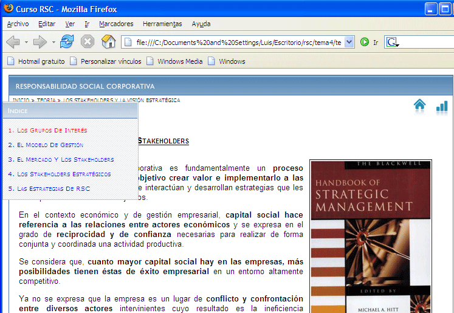
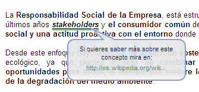
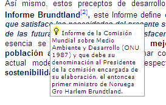
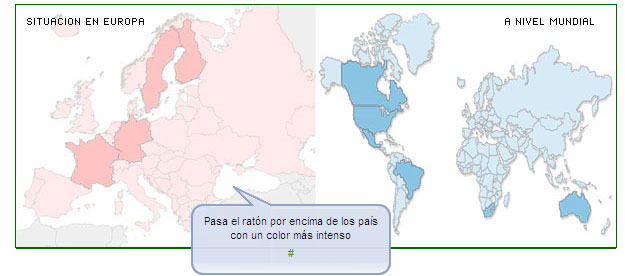
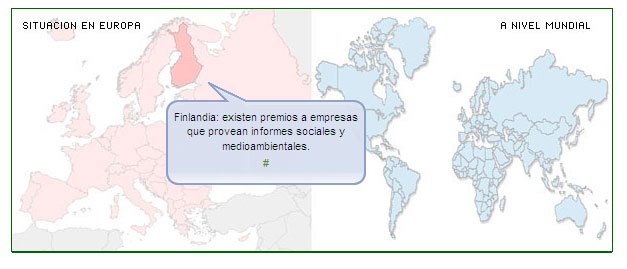
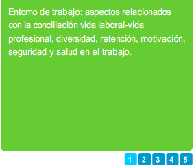
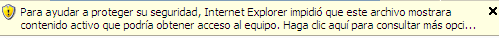
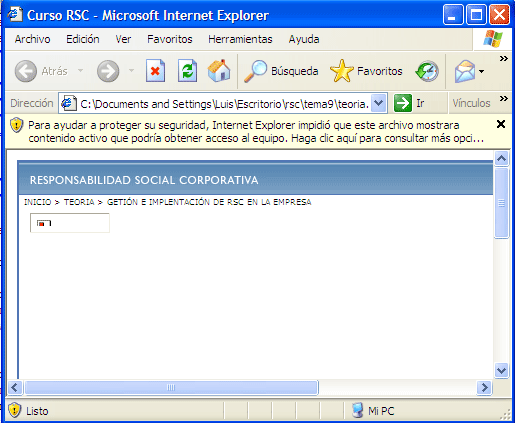
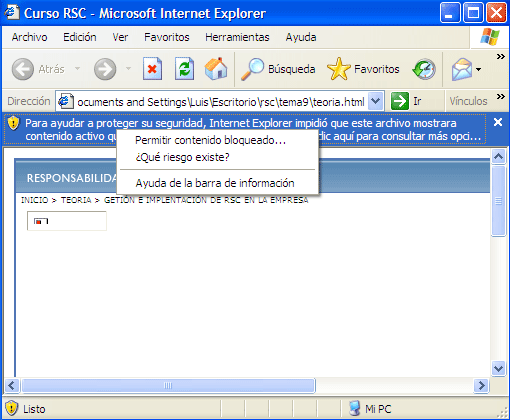

INTERFAZ DE LA PÁGINA INICIAL:
| El nombre del tema en el que se encuentra el usuario del curso. | |
| El número de veces que el usuario ha entrado en el tema. | |
| La puntuación máxima que el usuario ha sacado en el cuestionario, una vez que lo haya realizado. | |
| Tiempo que el usuario ha invertido en el estudio del tema. |
Estos parámetros se irán actualizando a medida que el alumno vaya visitando el tema a estudiar.
 |
Al pulsar este icono se comienza la parte de teoría. |
| Inicialmente este icono está inactivo, este se activará cuando el alumno de por estudiado el tema pulsando el botón correspondiente al final de cada tema. Los cuestionarios correspondientes a cada tema contienen 10 preguntas del tema en cuestión y éstas se realizarán de forma aleatoria, tanto las preguntas como las propias respuestas se cambian de orden cada vez que el usuario entra ha realizar un cuestionario. |
|
 |
Este botón aparece al final de la parte de teoría, al pulsarlo se da por completada la teoría y se activan los cuestionarios correspondientes. |
INTERFAZ DE TEORÍA:
 Icono Casa: Cuando el usuario pulsa este icono tiene la posibilidad de volver a la plataforma y salir de la teoría volviendo al índice de contenidos del curso.
Icono Casa: Cuando el usuario pulsa este icono tiene la posibilidad de volver a la plataforma y salir de la teoría volviendo al índice de contenidos del curso.
Icono Lápiz: Cuando el usuario pulsa este icono salta a realizar el cuestionario del tema que está estudiando. Este icono sólo estará activo cuando el usuario de por finalizado el tema en la última página del mismo.
 Icono Bibliografía: Con este icono se accede a la bibliografía utilizada o a la que se hace referencia en dicho tema.
Icono Bibliografía: Con este icono se accede a la bibliografía utilizada o a la que se hace referencia en dicho tema.
Navegación por la teoría: El usuario podrá recorrer la teoría de tres formas diferentes:
A traves de la barra de páginas que hay en la parte inferior de cada una de las hojas que componen el tema, bien dándole para avanzar a la siguiente o desplegar dicha barra e ir a la que el usuario quiera en cuestión:
O bien avanzar a través del menú que aparece en algunos temas para poder ir a un subpunto del tema en cuestión. Al iniciar cada tema se indica dónde está dicho menú situado en la parte superior izquierda como mostraremos a continuación. Se puede ver el indicador menú en rojo, éste estará parpadeando hasta que desaparecerá pues es un mero indicador para señalar donde se encuentra el menú de índice.

Así cuando pasamos el ratón sobre la tabla que indica la flecha de menú esta se despliega mostrando los subpuntos de los que está compuesto el tema y si hacemos click sobre uno de estos nos desplazamos directamente sobre la página en cuestión. A continuación se muestra el menú desplegado:

Enlaces: Permiten al usuario acceder a información adicional sobre el concepto subrayado, para ello sólo basta con pulsar dicho concepto de forma que se abrirá una ventana de Internet en la que se cargará la dirección a la cual se le remite al usuario para una documentación adicional . Además aparece un bubble donde aparece la dirección del enlace.

Notas de pie de página: En algunas palabras del curso aparece un número al lado de la siguiente forma, cuando el usuario pasa el cursor del ratón por encima del número se muestra una nota sobre la palabra a la que acompaña:

Bocadillos  : Los bocadillos se utilizan a lo largo de los temas con el fin de dar una explicación detallada del concepto al que acompañan. Este se activa cuando se pasa el cursor por encima de éste.
: Los bocadillos se utilizan a lo largo de los temas con el fin de dar una explicación detallada del concepto al que acompañan. Este se activa cuando se pasa el cursor por encima de éste.
Mapas: En el tema 6, Compromisos y normas de RSC, el usuario podrá navegar sobre un mapa del mundo, la manera de hacerlo será pasar el ratón sobre los países que tienen el color más resaltado pudiendo ver la información que se quiere comentar sobre cada uno de ellos.

De forma que cuando se pasa sobre los países de mayor colorido salen los correspondientes mensajes de cada uno de ellos, por ejemplo si lo hacemos sobre Finlandia sale la siguiente información:

Tablas de conceptos : En algunos temas el usuario se podrá encontrar con unas tablas, en cuya parte inferior saldrán una serie de números, si el usuario pulsa cada uno de ellos va navegando sobre cada uno de los conceptos que se quieren numerar.

MUY IMPORTANTE:
Cuando el usuario comience cada tema no se puede olvidar de desbloquear el contenido activo, que bloquea el Navegador Internet Explorer, ya que cuando el usuario inicie una unidad le podrá salir la siguiente ventana.
Fíjese justo arriba del título del curso, donde pone RESPONSABILIDAD SOCIAL CORPORATIVA, encima de este título es posible que salga el siguiente mensaje:
 

|